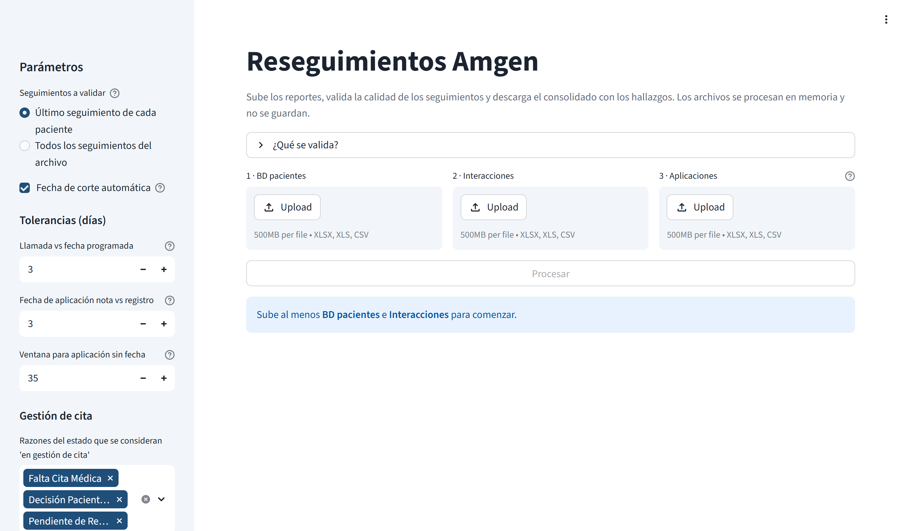
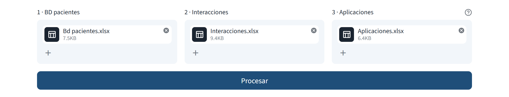
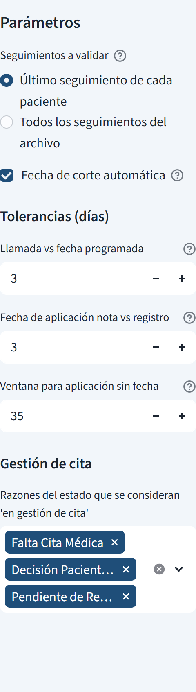
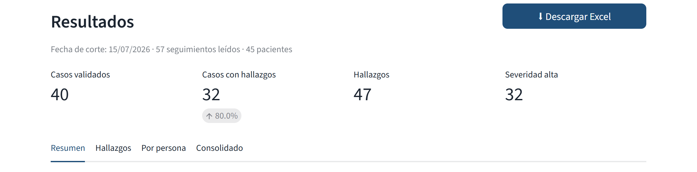
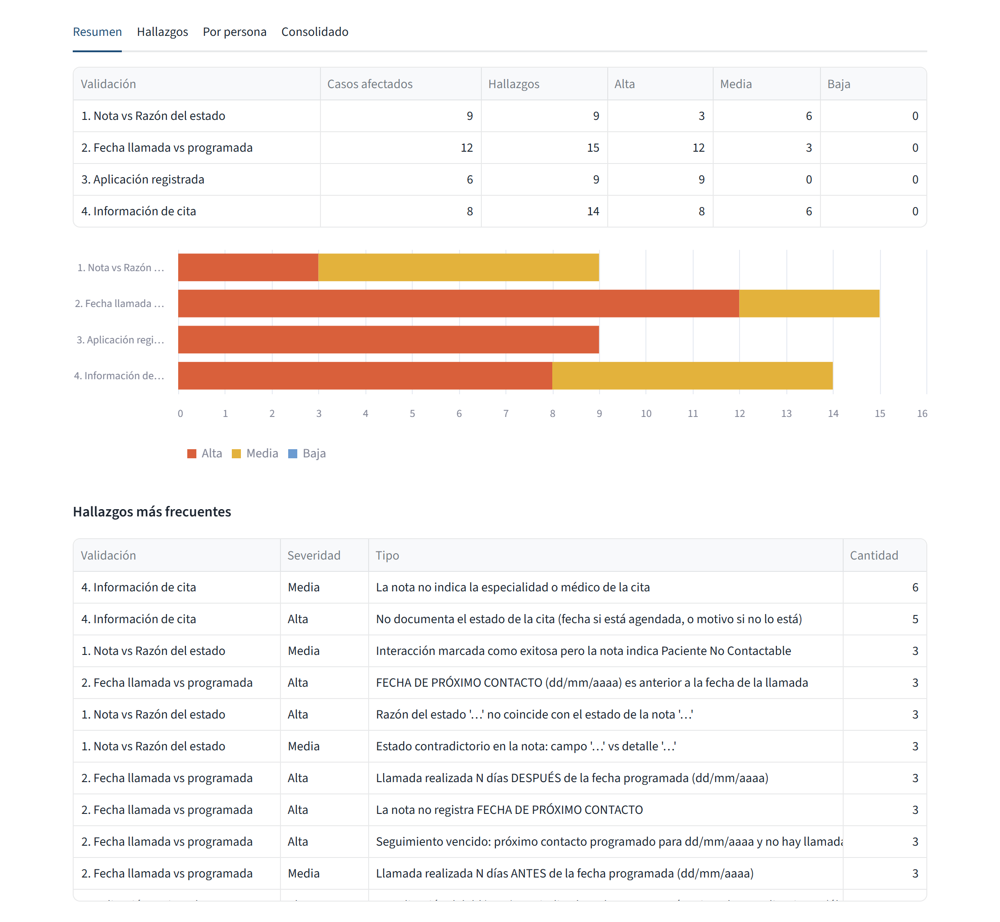
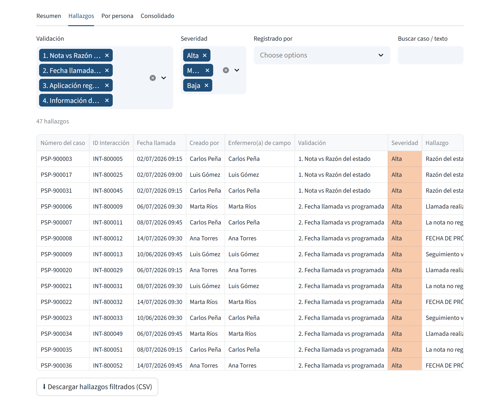
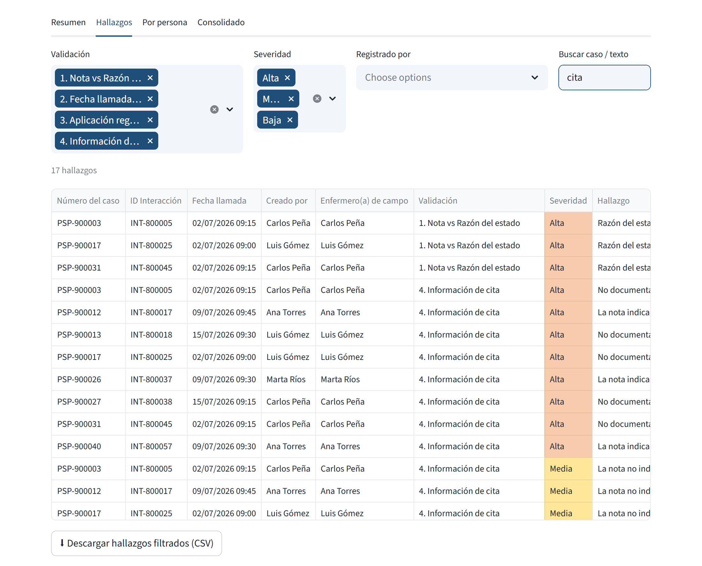
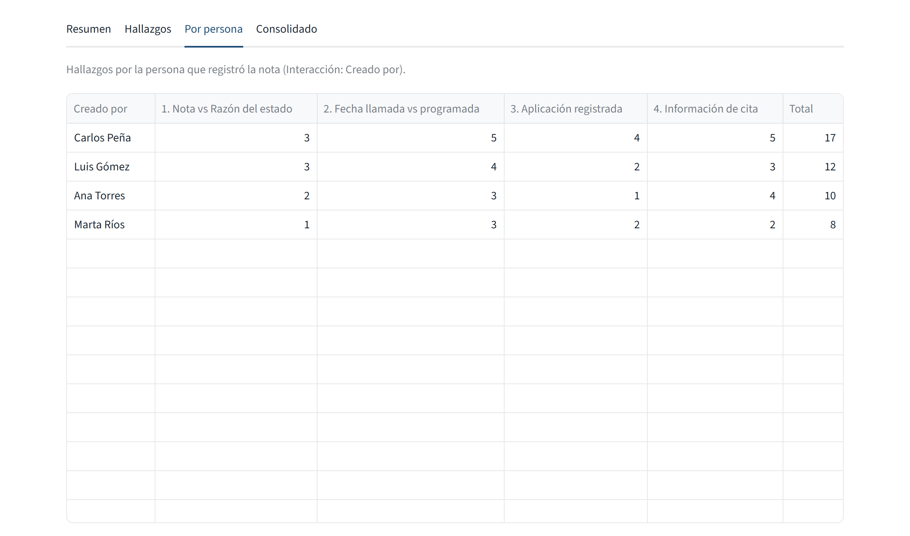
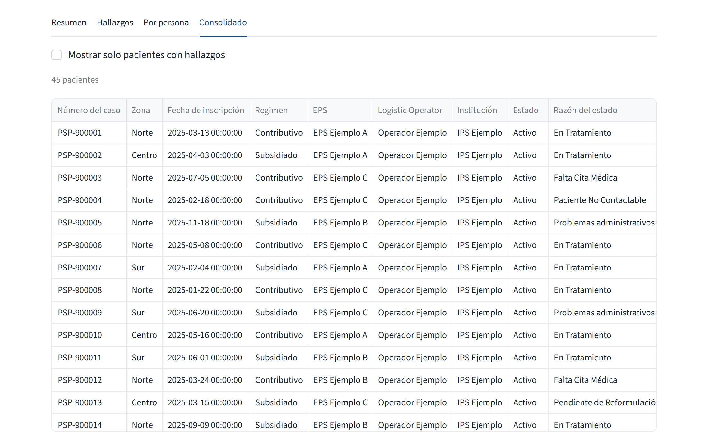

Reseguimientos Amgen es una página web interna que toma los reportes descargados de Salesforce (BD pacientes, Interacciones y Aplicaciones) y hace dos cosas:
El resultado se ve en pantalla (con filtros) y se descarga en un archivo Excel listo para compartir.
| Archivo | ¿Obligatorio? | Qué contiene / para qué se usa |
|---|---|---|
| 1 · BD pacientes | Sí | Un registro por paciente (caso) con su Estado, Razón del estado, EPS, enfermero(a) de campo, etc. Es la base del consolidado. |
| 2 · Interacciones | Sí | Todos los seguimientos (llamadas, visitas) con la fecha de inicio y la nota (Recomendaciones). Es lo que se valida. |
| 3 · Aplicaciones | Recomendado | Registro de las aplicaciones del medicamento. Sin este archivo no se ejecuta la validación 3 ni se calcula la próxima aplicación. |
Formatos aceptados: .xlsx, .xls y .csv. Tamaño máximo: 500 MB por archivo. Puede subir los reportes tal como se descargan; no hace falta borrar columnas ni cambiar el orden.
La plataforma busca las columnas por su nombre (sin importar mayúsculas ni tildes). No cambie los nombres de las columnas al descargar el reporte. Las marcadas con ★ son indispensables: si faltan, el proceso se detiene con un mensaje de error.
| Archivo | Columnas |
|---|---|
| BD pacientes | ★ Número del caso · Zona · Fecha de inscripción · Regimen · EPS · Logistic Operator · Institución · Estado · Razón del estado · Enfermero(a) de campo · Programa |
| Interacciones | ★ Número del caso · ★ Inicio · Recomendaciones · Interacción: Interacciones ID · Interacción: Creado por · Interacción existosa? |
| Aplicaciones | ★ Número del caso · ★ Fecha de aplicación · Frecuencia · ¿Medicamento aplicado? |
La columna Recomendaciones de Interacciones es la nota del seguimiento. La plataforma la lee línea por línea con el formato CLAVE: VALOR, como en la plantilla del programa:
Abra en el navegador (Chrome o Edge) la dirección que le compartió el administrador, por ejemplo
http://NOMBRE-DEL-EQUIPO:8501. En el equipo donde está instalada se abre con
http://localhost:8501.

La pantalla tiene dos zonas:

El botón Procesar permanece gris (inactivo) hasta que estén cargados al menos BD pacientes e Interacciones.
Los parámetros no filtran ni borran datos: son las reglas con las que se decide qué es un error. Los valores por defecto sirven para el uso diario. Si cambia alguno, debe presionar Procesar de nuevo para que se aplique.

Es la fecha que se toma como "hoy" para decidir si un seguimiento está vencido y si una aplicación está vencida.
| Parámetro | Defecto | Qué controla | Ejemplo con el valor por defecto |
|---|---|---|---|
| Llamada vs fecha programada | 3 | Días de diferencia aceptados entre la fecha de próximo contacto que dejó la nota anterior y la fecha real de la llamada. También es el margen para considerar un seguimiento vencido. | Programada 10/03. Llamada 12/03: correcto. Llamada 15/03: hallazgo (5 días después). |
| Fecha de aplicación nota vs registro | 3 | Días de diferencia aceptados entre la fecha de aplicación escrita en la nota y la registrada en Aplicaciones. | Nota dice 12/03 y Aplicaciones tiene 14/03: correcto. Aplicaciones tiene 20/03: hallazgo. |
| Ventana para aplicación sin fecha | 35 | Solo cuando la nota dice que se aplicó el medicamento pero no indica la fecha: se busca una aplicación registrada entre la llamada anterior y la actual, máximo estos días hacia atrás. | Llamada el 30/06 sin fecha en la nota y llamada anterior el 10/06: se busca una aplicación desde el 10/06 (menos la tolerancia) hasta el 30/06. |
Regla práctica: subir una tolerancia hace la revisión más permisiva (menos hallazgos); bajarla la hace más estricta (más hallazgos).
Lista de Razones del estado que se consideran "paciente en gestión de cita". Solo a esos pacientes se les aplica la validación 4. Por defecto: Falta Cita Médica, Decisión Paciente - Sin Cita y Pendiente de Reformulación. Puede agregar otras desde el desplegable (por ejemplo Decisión Médica - Exámenes) o quitar una con su X.
Presione Procesar. Una barra muestra el avance: Leyendo BD Pacientes → Leyendo Interacciones → Leyendo Aplicaciones → Validando seguimientos → Consolidando → Generando Excel → Listo.
Al terminar aparece el botón ⬇ Descargar Excel arriba a la derecha de los resultados. El archivo se llama
Reseguimientos_AAAAMMDD.xlsx, con la fecha de corte. Su contenido se explica en la sección 5.

| Indicador | Significado |
|---|---|
| Fecha de corte | Fecha usada como "hoy" (ver 3.3), con el número de seguimientos leídos y de pacientes en BD. |
| Casos validados | Pacientes que tienen al menos un seguimiento en el archivo de Interacciones (los que se pudieron revisar). |
| Casos con hallazgos | Cuántos de esos pacientes tienen al menos un hallazgo. El porcentaje debajo es sobre los casos validados. |
| Hallazgos | Total de alertas. Un mismo paciente puede tener varias. |
| Severidad alta | Hallazgos de severidad Alta: los que conviene revisar primero. |

Lista completa de hallazgos, uno por fila, ordenados por severidad.

Filtros (se aplican al instante, sin volver a procesar):
| Filtro | Uso |
|---|---|
| Validación | Quite con la X las validaciones que no quiere ver. |
| Severidad | Por ejemplo, deje solo Alta para priorizar. |
| Registrado por | Elija una o varias personas (quien creó la nota) para ver solo sus hallazgos. |
| Buscar caso / texto | Escriba un número de caso (p. ej. PSP-900012) o una palabra; busca en el número de caso, en el texto del hallazgo y en la nota. Presione Enter. |

Columnas de la tabla: Número del caso, ID Interacción, Fecha llamada, Creado por (quien escribió la nota), Enfermero(a) de campo (asignado en BD pacientes), Validación, Severidad, Hallazgo (la explicación del error), Razón del estado y DETALLE (la nota). Puede desplazarse a la derecha para ver las columnas de texto, ampliar una columna arrastrando su borde u ordenar haciendo clic en el encabezado.
Con ⬇ Descargar hallazgos filtrados (CSV) obtiene solo las filas que está viendo, por ejemplo para enviarle a una persona únicamente sus hallazgos.

Tabla con una fila por persona que registró notas (Interacción: Creado por) y el número de hallazgos en cada validación, ordenada de mayor a menor total. Sirve para identificar necesidades de retroalimentación o capacitación.

Es la misma tabla de la hoja Reseguimientos del Excel: una fila por paciente con su información, su último seguimiento, su última aplicación y el resultado de cada validación. La casilla Mostrar solo pacientes con hallazgos deja solo los casos con al menos un error. Las columnas se explican en la sección 6.
El archivo tiene tres hojas. Las hojas de datos tienen filtros en el encabezado y la primera fila y columna quedan fijas al desplazarse.
Una fila por paciente de BD pacientes (también los que no tienen seguimientos). Las columnas, de izquierda a derecha:
| Grupo de columnas | Contenido |
|---|---|
| Datos del paciente | Número del caso, Zona, Fecha de inscripción, Regimen, EPS, Logistic Operator, Institución, Estado, Razón del estado, Enfermero(a) de campo, Programa (tal como vienen en BD pacientes). |
| Último seguimiento | Inicio (fecha y hora de la última interacción) y los campos de su nota: CANAL DE CONTACTO, PARTICIPANTE, TIPO DE GESTIÓN, TIPO DE CONTACTO, ESTADO DESPUÉS DE CONTACTO, FECHA DE ÚLTIMA APLICACIÓN, FECHA DE CONTROL CON ESPECIALISTA, FECHA DE PRÓXIMO CONTACTO, REPORTE FV, DETALLE, OP LOGÍSTICO. |
| Aplicaciones | Fecha de Aplicación (última aplicada), Próxima Aplicación, Estado de Aplicación (encabezado amarillo) y Frecuencia. |
| Validaciones (encabezado naranja) | Una columna por validación (1. Nota vs Razón del estado … 4. Información de cita) con OK o el texto de los hallazgos separados por " | ", y dos conteos (ver recuadro abajo). Quedan vacías para los pacientes sin seguimientos. |
Un registro por hallazgo, con las mismas columnas de la pestaña Hallazgos (sección 4.3). La columna Severidad está coloreada: Alta Media Baja. Use los filtros de Excel para repartir el trabajo por persona o por validación.
De Interacciones se toma, para cada número de caso, la interacción con la fecha de Inicio más reciente. Su nota (Recomendaciones) se separa en columnas según la clave de cada línea (sección 2.3). Si una clave aparece dos veces en la misma nota, se usa la primera.
De Aplicaciones se toma, para cada caso, la aplicación con la fecha de aplicación más reciente. Las marcadas como ¿Medicamento aplicado? = No no cuentan.
Se calcula sumando a la última fecha de aplicación el intervalo de su Frecuencia:
| Frecuencia | Se suma |
|---|---|
| Diaria | 1 día |
| Semanal | 7 días |
| Quincenal | 15 días |
| Cada 20 Dias | 20 días |
| Cada 21 Dias / Cada 3 Semanas | 21 días |
| Mensual | 1 mes |
| Cada 3 Meses | 3 meses |
| Semestral | 6 meses |
| Otro, vacía o no reconocida | Se muestra "Frecuencia Errónea" |
| Valor | Cuándo aparece |
|---|---|
| Aplicación Vencida | La Próxima Aplicación es anterior a la fecha de corte. |
| En espera de aplicación | La Próxima Aplicación es igual o posterior a la fecha de corte. |
| Sin aplicación | El paciente no tiene aplicaciones registradas. |
| Revisar | La frecuencia es errónea, por lo que no se puede calcular la próxima aplicación. |
Cada validación revisa las notas según el alcance elegido (último seguimiento o todos) y genera un hallazgo por cada problema encontrado. Al leer el texto, la plataforma no distingue mayúsculas, minúsculas ni tildes ("Aplicación" = "APLICACION").
| Severidad | Significado | Qué hacer |
|---|---|---|
| Alta | Error claro de registro o de proceso: dato que contradice otra fuente, información obligatoria ausente o seguimiento vencido. | Revisar y corregir con prioridad. |
| Media | Inconsistencia probable o información incompleta que conviene completar. | Revisar; corregir si aplica. |
| Baja | Mejora de calidad del registro o punto a verificar; no necesariamente es un error. | Verificar cuando haya tiempo; útil para capacitación. |
Objetivo: que lo escrito en la nota sea coherente con la Razón del estado registrada para el paciente.
¿Cómo sabe la plataforma qué estado dice la nota? Lee el campo ESTADO DESPUÉS DE CONTACTO y también el inicio del DETALLE (lo que va antes de la primera "/"). Reconoce las variantes habituales: "TRATAMIENTO" = En Tratamiento; "NO CONTACTABLE" = Paciente No Contactable; "EN ESPERA DEL MEDICAMENTO" = En Espera del Medicamento O Compra Particular; "INACTIVO - DECISIÓN MÉDICA" = Decisión Médica, etc. Un estado general y su versión específica se consideran coherentes (por ejemplo Decisión Médica y Decisión Médica - Exámenes).
| Hallazgo | Severidad | Cuándo aparece |
|---|---|---|
| Razón del estado 'X' no coincide con el estado de la nota 'Y' | Alta | Solo en el último seguimiento. Ni el campo de estado ni el inicio del detalle coinciden con la Razón del estado del paciente. |
| El seguimiento no tiene nota (Recomendaciones vacías) | Alta | La interacción no tiene ni estado ni detalle. |
| Estado contradictorio en la nota: campo 'X' vs detalle 'Y' | Media | El campo ESTADO DESPUÉS DE CONTACTO dice una cosa y el inicio del DETALLE otra. |
| Interacción marcada como exitosa pero la nota indica Paciente No Contactable | Media | Interacción existosa? = Si, pero el estado de la nota es No Contactable. |
| La nota describe que no hubo contacto pero registra el estado 'X' | Media | Interacción existosa? = No, el detalle dice que no hubo contacto (no contesta, buzón, apagado, número errado…) y aun así se registra otro estado. |
| La nota no registra un estado reconocible del paciente | Media | No se pudo identificar ningún estado ni en el campo ni en el inicio del detalle. |
| El paciente no tiene Razón del estado registrada | Media | La Razón del estado está vacía en BD pacientes. |
| La nota registra inactivación con estado 'X'; verificar que la Razón del estado 'Y' sea la correcta | Baja | Igual que el primer caso, pero el paciente está Inactivo y la nota habla de inactivación, desmonte o speech: suele ser un cierre legítimo, solo se pide verificar. |
Objetivo: que las llamadas se hagan en la fecha programada y que siempre quede programado el siguiente contacto.
¿Cómo se calcula? Para cada seguimiento se toma la FECHA DE PRÓXIMO CONTACTO que dejó la nota anterior del mismo paciente y se compara con la fecha de Inicio de la llamada actual, con la tolerancia configurada. Si hubo varios intentos el mismo día, la comparación se hace solo con el primero.
| Hallazgo | Severidad | Cuándo aparece |
|---|---|---|
| Llamada realizada N días DESPUÉS de la fecha programada (dd/mm/aaaa) | Alta | La llamada se hizo más días después de lo programado de lo que permite la tolerancia. |
| Llamada realizada N días ANTES de la fecha programada (dd/mm/aaaa) | Media | La llamada se adelantó más de lo que permite la tolerancia. Puede ser válido (por ejemplo, si el paciente llamó); verificar. |
| La nota no registra FECHA DE PRÓXIMO CONTACTO | Alta | El campo está vacío o en 01/01/1999. No se exige si el estado es Fallecimiento, Servicios PSP Finalizados o Tratamiento Finalizado, ni en el último seguimiento de un paciente Inactivo. |
| FECHA DE PRÓXIMO CONTACTO (dd/mm/aaaa) es anterior a la fecha de la llamada | Alta | Se programó el siguiente contacto en una fecha que ya pasó (error de digitación probable). |
| Seguimiento vencido: próximo contacto programado para dd/mm/aaaa y no hay llamada posterior (corte dd/mm/aaaa) | Alta | Solo en el último seguimiento de pacientes no inactivos: el próximo contacto ya pasó (fecha de corte menos la tolerancia) y no existe una llamada más reciente. |
Objetivo: que toda aplicación que la nota reporte esté registrada en el módulo de Aplicaciones como aplicada. Requiere haber cargado el archivo de Aplicaciones.
Se revisan dos fuentes dentro de la nota:
| Hallazgo | Severidad | Cuándo aparece |
|---|---|---|
| La aplicación del dd/mm/aaaa indicada en la nota no está registrada en Aplicaciones (última registrada: …) | Alta | La fecha del campo FECHA DE ÚLTIMA APLICACIÓN no aparece en Aplicaciones. Se informa la última aplicación registrada para comparar (a veces es un error de año o de día). |
| La aplicación del dd/mm/aaaa está registrada en Aplicaciones como NO aplicada | Alta | Existe el registro en esa fecha, pero con ¿Medicamento aplicado? = No. |
| FECHA DE ÚLTIMA APLICACIÓN (dd/mm/aaaa) es posterior a la fecha de la llamada | Alta | Se escribió una fecha futura como última aplicación (probablemente se puso la próxima). |
| La nota confirma aplicación del dd/mm/aaaa pero no está registrada en Aplicaciones | Alta | El detalle confirma una aplicación con fecha y esa aplicación no está registrada. |
| La nota confirma una aplicación pero no hay aplicación registrada entre dd/mm y dd/mm | Alta | El detalle confirma una aplicación sin fecha y no hay ninguna aplicación registrada en el periodo. |
| La nota confirma aplicación pero no diligencia FECHA DE ÚLTIMA APLICACIÓN | Baja | La aplicación sí está registrada, pero el campo de fecha de la nota quedó vacío. |
Objetivo: cuando el paciente está esperando una cita médica, la nota debe dejar claro con quién es la cita y en qué va: la fecha si ya está agendada, o el motivo si aún no lo está.
¿A quién se aplica? A los pacientes cuya Razón del estado (en el último seguimiento) o cuyo estado en la nota está en la lista Gestión de cita de los parámetros.
¿Qué busca en el DETALLE?
| Hallazgo | Severidad | Cuándo aparece |
|---|---|---|
| La nota indica cita agendada pero no registra la fecha | Alta | Dice que la cita está agendada pero no hay ninguna fecha ni mes. |
| No documenta el estado de la cita (fecha si está agendada, o motivo si no lo está) | Alta | No se encuentra ni fecha, ni "agendada", ni motivo de por qué no hay cita. |
| La nota no indica la especialidad o médico de la cita | Media | No aparece ninguna especialidad ni médico. |
| La nota deja el texto de plantilla 'ESPECIALIDAD' sin diligenciar | Media | La nota contiene literalmente "/ESPECIALIDAD/" en lugar del nombre de la especialidad. |
| Cita agendada sin fecha exacta (solo indica el mes) | Baja | Por ejemplo "tiene cita para agosto". |
| La fecha de la cita está en el detalle pero no en FECHA DE CONTROL CON ESPECIALISTA | Baja | La fecha se escribió en el texto, pero el campo estructurado quedó vacío. |
| FECHA DE CONTROL CON ESPECIALISTA (dd/mm/aaaa) ya pasó; validar resultado de la cita | Baja | La cita registrada es anterior a la llamada: conviene preguntar y registrar qué pasó en la cita. |
| Situación | Causa y solución |
|---|---|
| La página no carga / "No se puede acceder a este sitio" | El servidor está apagado. En el equipo que la aloja, ejecute ejecutar_web.bat y deje la ventana abierta. Desde otro equipo, verifique que usa la dirección correcta (http://NOMBRE-DEL-EQUIPO:8501). |
| El botón Procesar está gris | Falta cargar BD pacientes o Interacciones. |
| "No se pudo procesar: No se encontró 'Número del caso' / 'Inicio' / 'Fecha de aplicación'…" | El archivo está en la casilla equivocada o la columna fue renombrada o eliminada. Verifique la sección 2.2. |
| Cambié un parámetro y los resultados no cambiaron | Los parámetros se aplican al presionar Procesar nuevamente. |
| Recargué la página y desaparecieron los resultados | Es normal: la información no se guarda. Procese de nuevo y descargue el Excel antes de cerrar. |
| No aparece la validación 3 / aviso "No se cargó Aplicaciones" | No se subió el archivo de Aplicaciones. |
| Muchos pacientes aparecen como "Seguimiento vencido" o "Aplicación Vencida" | Revise la fecha de corte. Si la desmarcó y eligió la fecha de hoy, pero el reporte es de hace semanas, casi todo aparecerá vencido. Use la fecha de corte automática. |
| Muchos hallazgos "Llamada realizada N días ANTES…" | Si adelantar llamadas es aceptado por el equipo, aumente la tolerancia "Llamada vs fecha programada". |
| "Frecuencia Errónea" / Estado de Aplicación "Revisar" | La frecuencia de la aplicación es "Otro", está vacía o no es una de las de la tabla 6.3. Corrija la frecuencia en Salesforce. |
| Un hallazgo no es un error real | Puede ocurrir porque las reglas leen texto libre. Si un mismo caso falso se repite, repórtelo al administrador con el número de caso y la nota para ajustar la regla. |
| El proceso tarda mucho | Con los reportes completos es normal que tome unos minutos. El modo "Todos los seguimientos" tarda más. No recargue la página mientras avanza. |
| Un paciente aparece en el consolidado sin datos de seguimiento | No tiene interacciones en el archivo de Interacciones cargado (por ejemplo, porque el reporte cubre otro periodo). Esos pacientes no se validan. |
| Término | Definición |
|---|---|
| Caso | Paciente inscrito en un programa, identificado por el Número del caso (PSP-…). |
| Seguimiento / Interacción | Cada contacto registrado con el paciente (llamada, visita, mensaje) en el reporte de Interacciones. |
| Nota | El texto del seguimiento (columna Recomendaciones), con sus campos CLAVE: VALOR. |
| DETALLE | Campo de texto libre de la nota donde se describe lo conversado. |
| Estado / Razón del estado | En BD pacientes, el Estado es Activo, Inactivo o Suspendido; la Razón del estado es la situación específica (En Tratamiento, Falta Cita Médica…). |
| Próximo contacto | Fecha en que se programó la siguiente llamada (campo FECHA DE PRÓXIMO CONTACTO). |
| Fecha de corte | Fecha que se toma como "hoy" para calcular vencimientos. |
| Tolerancia | Margen de días que no se considera error al comparar dos fechas. |
| Hallazgo | Posible error detectado en un seguimiento. Tiene validación, severidad y explicación. |
| Severidad | Prioridad del hallazgo: Alta, Media o Baja (sección 7.1). |
| Consolidado | Tabla con una fila por paciente que junta pacientes, último seguimiento, aplicaciones y resultado de las validaciones. |